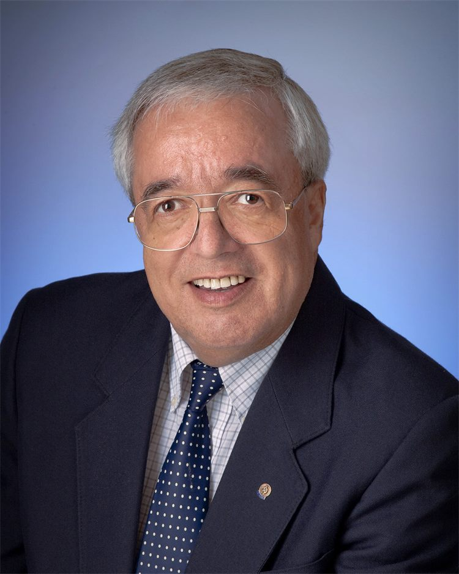

Eduardo Moniz

Ed has been accredited in Night Photography by the Professional Photographers of Canada (PPOC) and was awarded the designation of Craftsman of Photographic Arts by the PPOC. Formal training included black and white darkroom printing, Sante Fe Workshops Black and White Master Print series, Design Principles at Vancouver Island School of Art and a one-year mentorship program with the highly esteemed George DeWolfe.
In addition, many seminars and workshops have helped develop both artistic and technical skills. As a long-time photographer who reacts to and records the world around him, currently areas of interest are landscape and nature photography.
He is a former member and past president of the Victoria Camera Club and over the years has presented many workshops in Lightroom, Digital Editing and Fundamentals of Black and White.